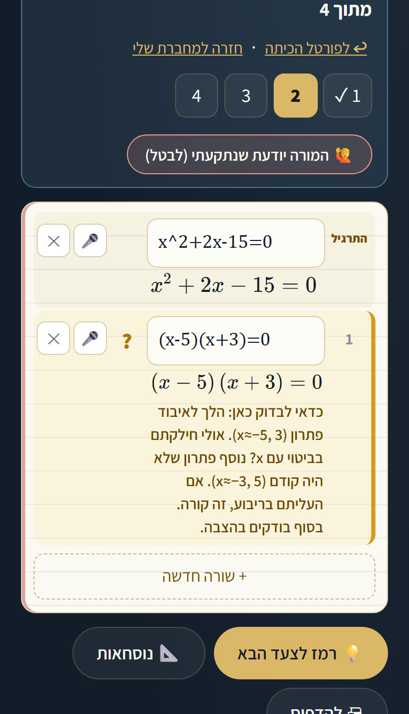
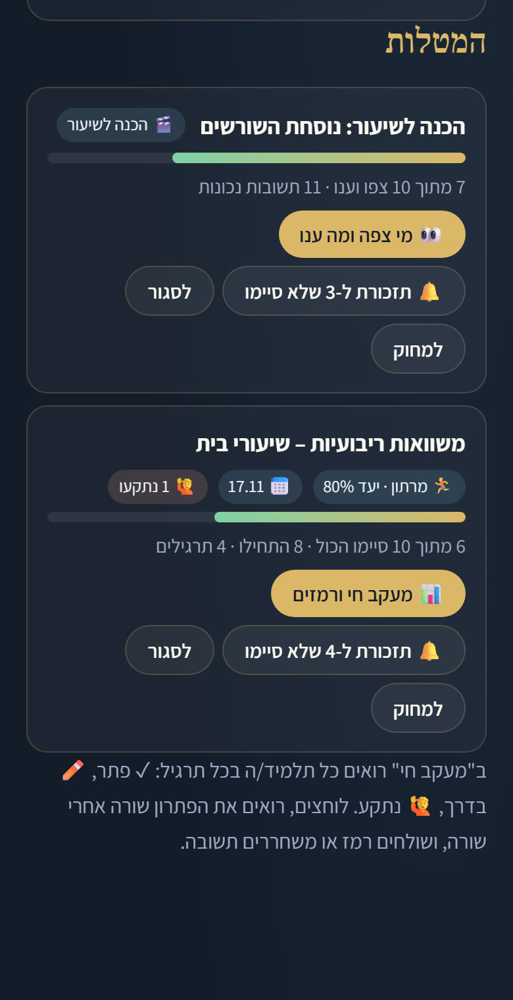
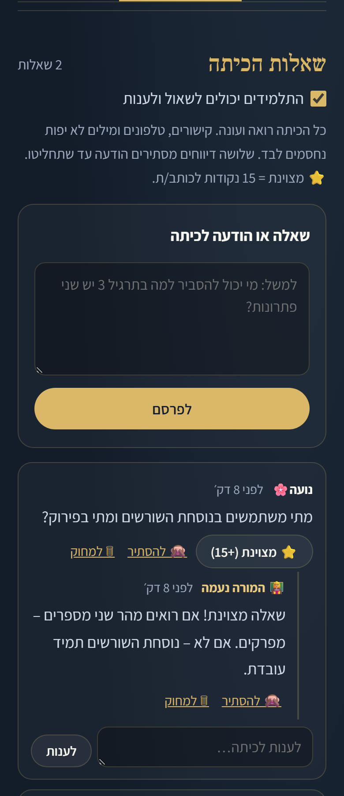
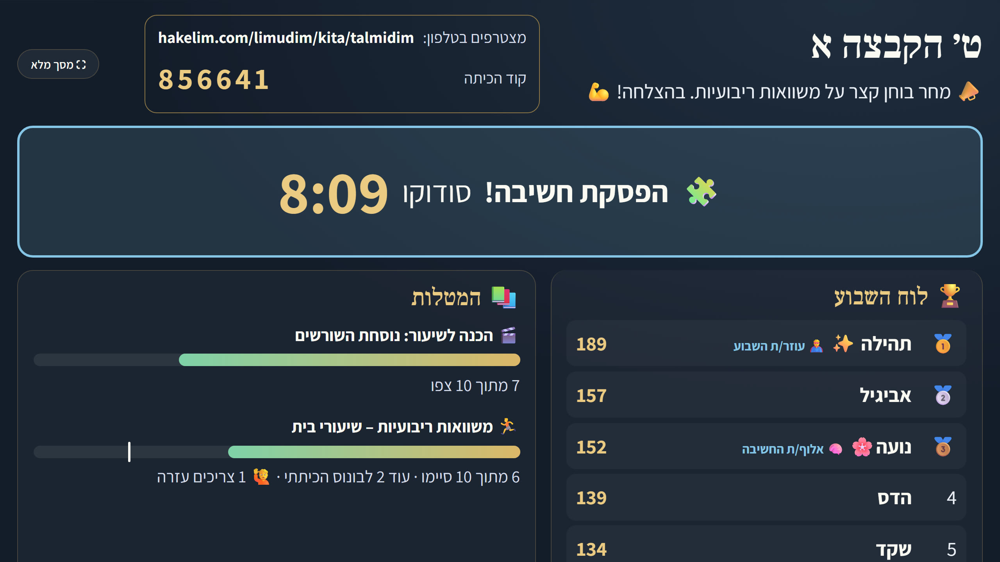

פורטל המורה לכל הכיתות וההקבצות. כל שורה שהתלמידה כותבת נבדקת מיד, והמורה רואה מי פתרה, מי בדרך ומי נתקעה – בזמן אמת.
רוב הכיתות הווירטואליות נבנו לכל המקצועות: מעלים קובץ, התלמידה מגישה קובץ, והמורה בודקת בערב. במתמטיקה זה לא עובד טוב. תלמידה נתקעת בשורה השנייה, ואף אחד לא יודע עד הבוקר.
כל שורה במחברת נבדקת מיד מול השורה שלפניה. מי שנתקעת לוחצת "נתקעתי", מקבלת רמז, והמורה רואה אותה ברשימה ושולחת רמז או משחררת תשובה – עוד באותו ערב.




זה מיזם חסד – לא רכישה, לא מנוי ולא השקעה. הסכום סמלי, והכול הולך להחזקת השרתים, כדי שהכלים יישארו חינמיים לכל תלמיד ולכל מורה. ואני כאן כדי לדייק יחד אתכם מה יהיה מושלם עבור בית הספר שלכם.
בית ספר שהכיתה הווירטואלית עובדת אצלו במתמטיקה – אבנה לו פורטל כזה גם לאנגלית, למדעים, ללשון ולכל מקצוע שצריך, עם הכלים שמתאימים לו.
לבתי ספר ולשותפות במיזם: hakelim.com/limudim/batei-sefer
אני גילעד רחמים. נפצעתי קשה במלחמה, בחאן יונס, ומאז אני בונה את הכלים האלה לבד – באהבה ובחסד. זה עולה לי הרבה כסף וזמן, ואני עושה את זה כדי שכל תלמיד ותלמידה יקבלו עזרה טובה בחינם, גם מי שאין לו שיעורים פרטיים. אשמח לשמוע מה חסר לכם.